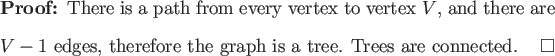
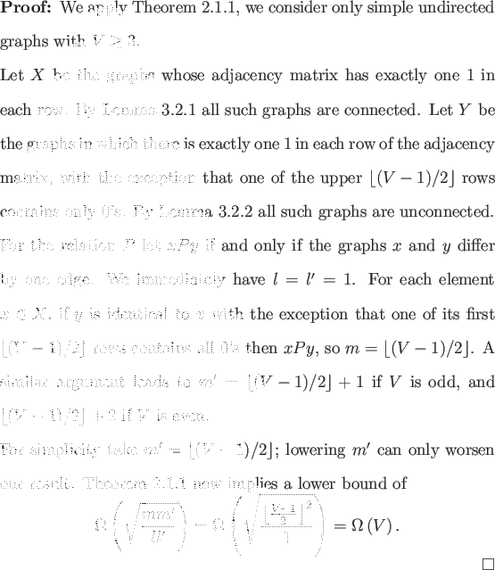

One of the most fundamental non-trivial monotone graph properties is graph connectivity. Graph connectivity is known to be evasive [7], so V(V - 1)/2 oracle queries are required to decide graph connectivity for a simple undirected graph in the classical case.
Every graph with V - 2 edges is unconnected, and every graph with (V - 1)(V - 2)/2 edges is connected. We can apply Theorem 2.5.1 with a = V - 2, b = (V - 1)(V - 2)/2, and N = V(V - 1)/2. This gives us only the trivial lower bound
To prove a lower bound for graph connectivity we will need Lemmas 3.2.1 and 3.2.2, which delineate classes of connected and unconnected graphs whose number of edges differ by one.


As an illustration of the sets X and Y and the relation P used in the proof of Theorem 3.2.1, consider a graph with vertex set {Q, R, S, T}, the graphs in X and Y and the relation P are depicted in Figure 3.2.
For the classical case connectivity is known to be evasive [7]. If this lower bound is known elsewhere for the quantum bounded error setting the author is unaware of it. It is not known if this lower bound is asymptotically tight in the bounded error setting. It seems reasonable that this bound could be tight, given the quadratic speedups realized by AND and OR. Then again it also seems reasonable that there is no asymptotic speedup as is the case for MAJORITY and PARITY.